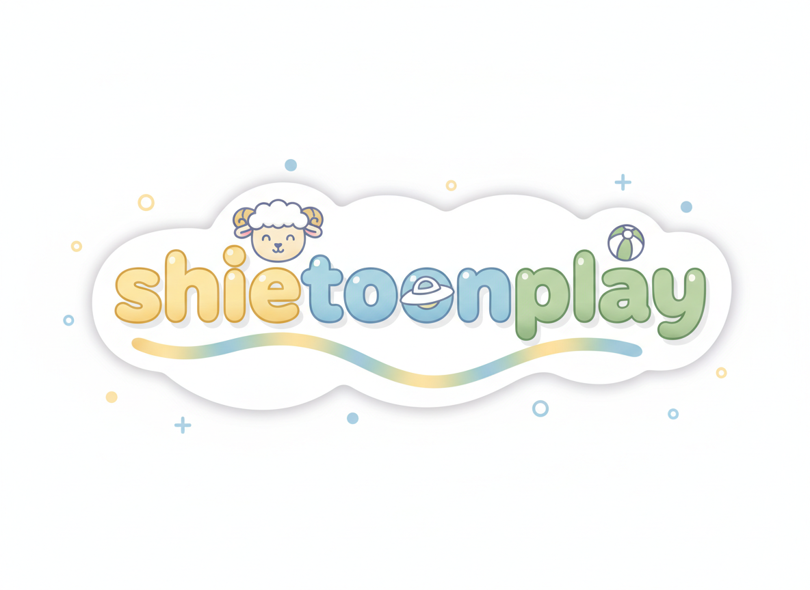
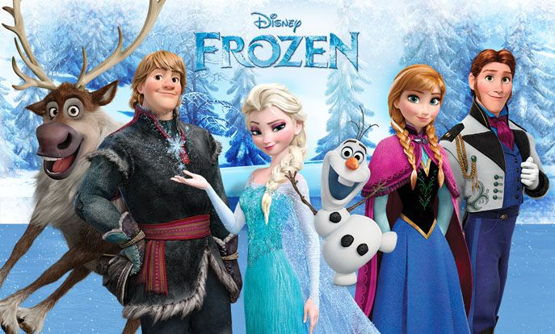
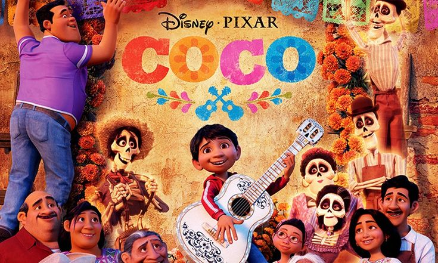
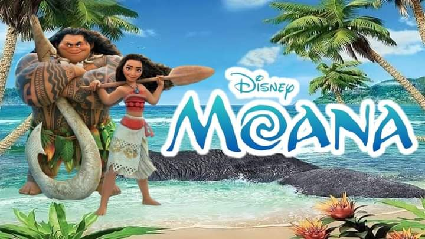

27 November 2013 | Views : 3,487,497
ercerita tentang Elsa yang memiliki kekuatan es dan tanpa sengaja membuat kerajaannya membeku. Adiknya, Anna, berusaha mencari Elsa untuk menghentikan musim dingin dan menyelamatkan kerajaan, sambil menunjukkan arti cinta keluarga.
Watch This22 November 2017 | Views : 3,487,497
menceritakan Miguel yang sangat menyukai musik, tetapi dilarang oleh keluarganya. Ia masuk ke dunia arwah saat Día de los Muertos dan berusaha mengungkap rahasia keluarganya sambil belajar menghargai leluhur dan keluarga.
Watch This23 November 2016. | Views : 3,487,497
Mengisahkan Moana yang berlayar untuk mengembalikan hati Te Fiti demi menyelamatkan pulau dan rakyatnya. Dalam perjalanannya bersama Maui, ia belajar tentang keberanian, tanggung jawab, dan menemukan jati diri. M
Watch This